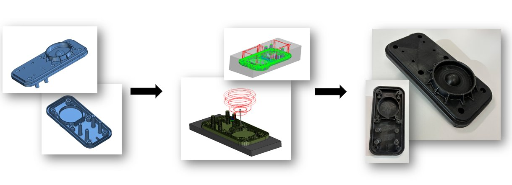
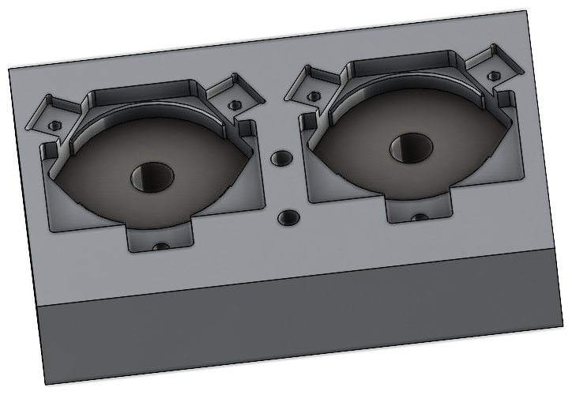
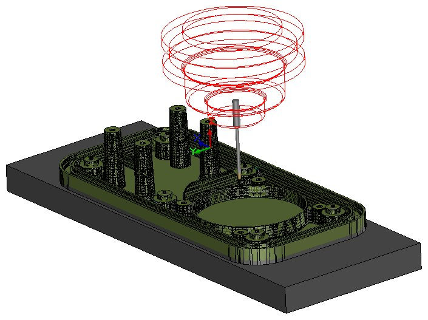

Review part geometry, define machining strategy, and design workholding.
Production Engineering · CAM · Qualification
Rochester Sensors
Worked across the product lifecycle, from CNC process development and workholding to FEA, troubleshooting, and environmental qualification of sensor assemblies.
Mechanical Engineering Intern · Rochester Sensors, an Amphenol company · May 2026–Present · Dallas, TX

−18%Machining cycle time
CAD → CAMProduction workflow
3 modesQualification testing
FEA + testDesign validation
01
My role in the lifecycle
Rochester builds liquid-level and pressure sensing systems for industrial and vehicle applications. My work connects engineering intent to repeatable production and then verifies that the finished assembly survives its field environment.
Simulate toolpaths, verify stock removal, and run the process on the machine.
Use analysis and environmental tests to validate the finished design.
02
Cycle-time optimization
On a milled component, I redesigned the tooling strategy and CamWorks operations to shorten the production cycle while preserving every GD&T requirement on the drawing.
Operation strategy
Selected machining operations and built the toolpath sequence around part geometry and production goals.
Gouge + stock checks
Verified motion and remaining material before running the process on production equipment.
Drawing compliance
Confirmed that the faster workflow still met the specified dimensional and geometric requirements.
18% faster cycle
The new tooling and operation strategy reduced machining time without trading away drawing compliance.
03
Fixtures and repeatability
A toolpath is only useful if every blank enters the machine in a known position. I designed and evaluated workholding that supports repeatable multi-part production.





04
Analysis and qualification
The same assemblies that are optimized for production must also survive fuel-tank and vehicle environments. I support design troubleshooting with SolidWorks stress and thermal FEA, then run physical qualification tests.
Temperature cycling
Exercise assemblies across changing temperatures to expose material, seal, and interface weaknesses.
Salt-spray exposure
Evaluate protection against corrosive environmental exposure and potential ingress paths.
Vibration testing
Validate mechanical durability under the repeated loading expected in vehicle service.